解析热学公式
引言
3DEC 是用于分析固体力学问题的三维离散元程序。程序中新增了一个简单的热-力选项，其主要目的是模拟嵌入材料中的热源。点热源可单独放置，也可排列成线或网格，以表示点源、线源或面源。由温度变化（热膨胀）引起的应力变化，通过用标准力学 3DEC 程序在不同时刻对瞬态应力取“快照”来平衡。
注意，3DEC 中的热学选项并不提供通用的传热程序。其目的专门针对解决与核废料处置相关的设计问题。
这种温度计算方法有以下几项优点：
- 无限热边界会被自动纳入。
- 与有限元或其他数值方法相比，该计算过程极其快速。
- 任意时刻温度的计算与先前时刻的温度无关，因此无论需要哪个时刻的解，计算所需时间都相同。
- 力学边界条件可以正确施加，因为计算中的力学部分使用 3DEC 的标准力学逻辑。
- 可采用非均质和各向异性的力学属性。
存在两点限制：
- 假定材料在热学上均质且各向同性，且属性为常数。
- 只能施加少数受限的热边界条件（即绝热面和等温面）。
尽管这种求解热-力问题的方法存在局限，但在求解含热源的问题（例如核废料隔离问题）时，3DEC 中的热学耦合仍是有力的辅助手段。
理论
3DEC 中热-力学计算的基本理论组成部分是：确定热源引起的温度分布，以及计算这些温度变化所诱发的应力。
热源分布所引起的温度
可考虑的最简单热源是无限介质中的瞬态点源。这种热源产生的温度分布由以下简单表达式给出（Carslaw 和 Jaeger 1959）
其中：
\(Q\) = 热源中的热量；
\(\rho\) = 密度；
\(C_p\) = 比热；
\(K\) = 热扩散率 = \(k/ \rho C_p\)；
\(r\) = 热源与观测点之间的距离；
\(t\) = 热源释放后的时间；以及
\(k\) = 导热系数。
任一点处由任意空间和时间分布的热源引起的温度，可通过将该分布视为点源之和来求得。在极限情况下，当源的数量变得很大、且每个源的强度降低以保持总热输出不变时，该和式变为对时间、空间（线、面或体）或二者兼有的积分。
例如，强度为 \(Q(t)\) 的时变热源所引起的温度可写为
对于热源恒定的情况（即 \(Q(t)\) = \(H(t)\)，其中 \(H(t)\) 为 Heaviside 阶跃函数），式 (1) 变为（Carslaw 和 Jaeger，1959）
其中 互补误差函数（ferfc）（\(x\)）= 互补误差函数。
形式为 \(Q(t) = Q_e \exp(-At)\) 的指数衰减源引起的温度由下式给出（Crouch 和 McClain，1978）
其中：
\(w(z) = {{2iz} \over {\pi}}\ \int_0^{\inf}\ {e^{-t^2} \over {z^2 - t^2}}\ dt,\ Im\{z\} > 0\)
\(Re\){\(z\)} = \(z\) 的实部
\(Re\){\(z\)} = \(z\) 的虚部；以及
\(i\) = (-1)1/2.
线源、面源和体源可分别写成点源在距离、面积或体积上的积分。这样，完全任意分布的热源都可用解析表达式表示。在 3DEC 中，积分以数值方式进行，因此线源表示为沿线段的一系列点源，面源表示为点源网格。于是，要确定任意时刻任意点的温度，必须计算各项之和，其中每一项都具有式 (2) 或式 (3) 右端的形式。
边界条件
由于 3DEC 中使用的点源解适用于无限域，因此只能指定有限数量的边界条件。可以指定相互正交的等温面和对称面。对称面通过在对称面另一侧施加等量值的镜像源来实现，而等温面则要求施加符号相反的镜像源（热汇）。两个等量源的效果是：各自在穿越该平面时产生热流，但两个热流方向相反，因此净热流为零。因此，对称面等效于绝热边界。另一方面，如果两个源符号相反，则净热流由热源流向热汇。在这种情况下，两个源都对平面上任一点的温度有贡献，但由于二者的贡献大小相等、符号相反，净效果是温度变化为零（即等温条件）。图 1（Figure 1）说明了在不同面上施加绝热和等温条件的情况，并示出了实现这些条件所需的热源组合。每指定一个边界平面，计算量就翻一倍，因此若定义三个不同的平面，所需计算量将增至八倍。
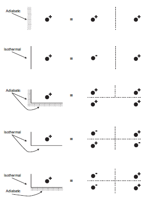
图 1：绝热边界与等温边界及其在 3DEC 中的表示。
热致应力变化
若将一小块无约束、温度恒定的材料加热到新的温度，它会膨胀，体积变化按下式计算
其中：
\(\beta\) = 体积热膨胀系数；
= \(3 \alpha\)，其中 \(\alpha\) 为线膨胀系数；以及
\(\Delta T\) = 温度变化。
若将该体积重新压缩回原始尺寸，平均应力变化将为
其中：
\(K\) = 体积模量；以及
\(\delta_{ij}\) = 克罗内克 δ 函数（当 \(i\) = \(j\) 时为 1；否则为 0）。
负号反映了压应力为负的约定。
热致应力不必处于平衡状态，因为它们仅取决于温度变化。如果它们不处于平衡，介质将运动以恢复平衡。例如，若将两块薄金属板用螺栓连接、中间以薄绝热层隔开，并对其中一块加热，则受热板中的热致应力会使其膨胀，而另一块板阻碍该运动，从而产生弯曲。一块板受拉，另一块受压。
3DEC 中的应用
热源特性（如组分数目、衰减常数及各组分的比例）由用户输入。此外还要输入点源阵列的位置和初始强度。可指定对称面和等温面，也可指定初始温度以及所需解对应的时间。输入这些量之后，即可计算所有网格点处的温度。此阶段不计算应力，但在进行力学循环计算时，会用每个网格单元的平均温度变化来计算该单元的应力变化。由此产生的应力状态不会处于平衡，但可作为力学计算的初始条件。采用 3DEC 的标准力学计算达到平衡。
输入命令
下面给出用 3DEC 求解热-力学问题所需的命令。这些命令按其功能分组给出。假定读者熟悉 3DEC 及其执行的力学计算以及输入命令。
验证
首先，将单个点源引起的温度分布与解析解进行比较。然后，为全面检验热学逻辑，考察了点源、线源和网格源的不同组合。这些结果理应与解析解吻合得极好，因为 3DEC 本质上只是在计算解析解。这些最初的算例仅用于确认程序编码正确，并说明程序的用法。
最后，通过将点源引起的应力状态与无限介质中点源的应力状态进行对比，来证明力学解的正确性。这是对热-力学耦合的真正检验，因为 3DEC 的力学逻辑用于使应力达到平衡。该检验尤为严格，因为解析解在源点本身存在奇异性，会在热源周围产生陡峭的梯度。
单个非衰减点热源
考虑一位于原点、功率为 30 kW 的热源，其位于具有以下属性的无限介质中：
| density | 1500 kg/m3 |
| 比热容 | 500 J/kg/C0 |
| 热导率 | 2.4 W/m/C0 |
由这些属性可算得热扩散率为 3.2 × 10−6 m2/s。
以下数据文件用于计算该源引起的温度分布。3DEC 中热计算的精度与力学网格无关，但温度是在网格点上计算的，因此需指定一个可从中提取计算温度分布的网格。
PointSource.dat
model new
model config thermal
block thermal analytical on
block create brick 0,2 0,2 0,10
block cut j-set dip 0 d-d 0 or 0 0 2 spacing 2
block zone generate edgelength 3.5
block thermal source 1, n-comp 2, comp 1 = frac .2, comp 2 = frac .8
block thermal analytical diffus=3.2e-6 cond=2.4
block thermal analytical tolerance 0.01
block thermal point 0,0,0 source 1 strength 30000 t-start 0
fish def get_temp(itab)
;
; 将温度填入输入数据表
;
loop foreach local gp block.gp.list
local radius = math.mag(block.gp.pos(gp))
if radius >= 2.0
table(itab,radius) = block.gp.temp(gp)
end_if
end_loop
end
program call "solutions.fis"
block thermal analytical solve time=2e6
[get_temp(1)] ; 表 '1' 为 2e6 s 时的 3DEC 结果
table '1' label '2e6 s - 3DEC'
[point_source_line(2e6,2,30000)] ; 表 '2' 为 2e6 s 时的解析结果
table '2' label '2e6 s - Analytical'
block thermal analytical solve time=2e7
[get_temp(3)] ; 表 '3' 为 2e7 s 时的 3DEC 结果
table '3' label '2e7 s - 3DEC'
[point_source_line(2e7,4,30000)] ; 表 '4' 为 2e7 s 时的解析结果
table '4' label '2e7 s - Analytical'
block thermal analytical solve time=2e11
[get_temp(5)] ; 表 '5' 为 2e11 s 时的 3DEC 结果
table '5' label '2e11 s - 3DEC'
[point_source_line(2e11,6,30000)] ; 表 '6' 为 2e11 s 时的解析结果
table '6' label '2e11 s - Analytical'
图 2（Figure 2）显示了 3DEC 计算结果与解析解的对比，解析解由式 (2) 得到。3DEC 采用解析表达式计算温度，因此可以预期温度完全一致。微小差异来自互补误差函数 互补误差函数（ferfc）（\(x\)）的计算方法不同。该函数在计算机语言中并不现成可用，必须用多项式近似。用于求解解析解的多项式与 3DEC 中使用的多项式不同。除 2e6 秒时最后几个点之外，各处的差异均小于 1%；在这些点上温度极小，差异并不重要。注意，温度仅在距热源 2 m 处显示，因为若取更近，热源处的奇异性将主导图形。
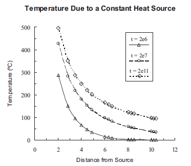
图 2：恒定热源周围的温度分布。
若干非衰减源的叠加
该数据文件说明了四个不同热源的叠加，其强度和起始时间各不相同。这里再次将解答与解析解（表 3（Table 3））进行比较，3DEC 的结果同样吻合极好。最大误差出现在温度变化很小的位置。
SeveralSources.dat
model new
model config thermal
block thermal analytical on
block create brick 0,2 0,2 0,20
block cut j-set dip 0 d-d 0 or 0 0 2 spacing 2
block zone generate edgelength 3.5
; 采用两种不同的源定义方式，以检验叠加
block thermal source 1, n-comp 2, comp 1 = frac .2, comp 2 = frac .8
block thermal source 2, n-comp 2, comp 1 = frac .4, comp 2 = frac .6
block thermal analytical diffus=3.2e-6 cond=2.4
block thermal analytical tolerance 0.01
fish def sources
global pos1 = vector(2,2,10)
global pos2 = vector(1,2,10)
global pos3 = vector(2,1,10)
global pos4 = vector(2,2,5)
global str1 = 7000
global str2 = 10000
global str3 = 4000
global str4 = 9000
global ttime1 = 1e7
global ttime2 = 1e7
global ttime3 = 2e7
global ttime4 = 3e7
end
[sources]
block thermal point 2,2,10 source 1 strength [str1] t-start [ttime1]
block thermal point 1,2,10 source 2 strength [str2] t-start [ttime2]
block thermal point 2,1,10 source 1 strength [str3] t-start [ttime3]
block thermal point 2,2,5 source 2 strength [str4] t-start [ttime4]
fish def get_temp(itab)
;
; 将温度填入输入数据表
;
loop foreach local gp block.gp.list
local radius = math.mag(block.gp.pos(gp))
if radius >= 2.0
table(itab,radius) = block.gp.temp(gp)
end_if
end_loop
end
; 所有源的 t 均小于 0
block thermal analytical solve time=8e6
; 两个源的 t = 2e6
block thermal analytical solve time=1.2e7
program call "solutions.fis"
program call "four_sources.fis"
[four_sources(1.2e7)]
; 两个源的 t=2e7，一个源为 1e7，另一个为 0
block thermal analytical solve time=3e7
[four_sources(3e7)]
| X Y Z | \(t\) = 1.2\(e\)7 | \(t\) = 3\(e\)7 | ||||
|---|---|---|---|---|---|---|
| 3DEC | 解析解 | 误差（%） | 3DEC | 解析解 | 误差（%） | |
| 0 2 0 | 0.26 | 0.29 | -8.8 | 23.31 | 23.32 | -0.04 |
| 2 2 0 | 0.28 | 0.31 | -8.2 | 23.86 | 23.87 | -0.04 |
| 2 0 0 | 0.23 | 0.26 | -9.8 | 22.93 | 22.95 | -0.08 |
| 0 0 0 | 0.22 | 0.24 | -10.5 | 22.41 | 22.42 | -0.06 |
| 0 0 2 | 1.29 | 1.30 | -0.4 | 35.65 | 35.64 | 0.02 |
| 2 0 2 | 1.40 | 1.41 | -0.2 | 36.75 | 36.74 | 0.01 |
| 0 2 2 | 1.59 | 1.59 | 0.04 | 37.47 | 37.47 | 0.01 |
| 2 2 2 | 1.73 | 1.73 | 0.2 | 38.65 | 38.64 | 0.03 |
| 2 2 4 | 8.48 | 8.44 | 0.4 | 65.00 | 64.95 | 0.08 |
| 0 2 4 | 7.69 | 7.65 | 0.5 | 62.12 | 62.07 | 0.07 |
| 2 0 4 | 6.64 | 6.60 | 0.6 | 60.48 | 60.43 | 0.08 |
| 0 0 4 | 6.04 | 6.00 | 0.6 | 57.87 | 57.83 | 0.07 |
| 2 2 4 | 8.48 | 8.44 | 0.4 | 65.00 | 64.95 | 0.08 |
| 0 2 4 | 7.69 | 7.65 | 0.5 | 62.12 | 62.07 | 0.08 |
| 2 0 4 | 6.64 | 6.60 | 0.6 | 60.48 | 60.43 | 0.08 |
| 0 0 4 | 6.04 | 6.00 | 0.6 | 57.87 | 57.83 | 0.07 |
| 0 0 6 | 22.59 | 22.6 | -0.1 | 97.5 | 97.43 | 0.07 |
| 2 0 6 | 25.45 | 25.5 | -0.2 | 105.0 | 105.0 | 0.03 |
| 0 2 6 | 31.0 | 31.1 | -0.2 | 109.9 | 109.8 | 0.07 |
| 2 2 6 | 35.33 | 35.4 | -0.2 | 119.0 | 119.0 | 0.03 |
| 0 0 6 | 22.59 | 22.6 | -0.1 | 97.5 | 97.4 | 0.07 |
| 2 0 6 | 25.45 | 25.5 | -0.2 | 105.0 | 105.0 | 0.03 |
| 0 2 6 | 31.0 | 31.1 | -0.2 | 109.9 | 109.8 | 0.07 |
| 2 2 6 | 35.33 | 35.4 | -0.2 | 119.0 | 119.0 | 0.03 |
| 2 2 8 | 145.7 | 145.7 | 0.03 | 271.1 | 271.1 | -0.01 |
| 0 2 8 | 114.1 | 114.1 | 0.02 | 222.2 | 222.2 | -0.007 |
| 2 0 8 | 79.62 | 79.7 | -0.05 | 199.5 | 199.5 | -0.007 |
| 0 0 8 | 66.71 | 66.8 | -0.09 | 169.6 | 169.5 | 0.03 |
| 2 2 8 | 145.7 | 145.7 | 0.03 | 271.1 | 271.1 | -0.01 |
| 0 2 8 | 114.1 | 114.1 | 0.02 | 222.2 | 222.2 | -0.007 |
| 2 0 8 | 79.62 | 79.7 | -0.05 | 199.5 | 199.5 | -0.007 |
| 0 0 8 | 66.71 | 66.8 | -0.09 | 169.6 | 169.5 | 0.03 |
| 2 2 10 | 23420 | 23410 | 0.01 | 23620 | 23621 | -0.007 |
| 0 2 10 | 325.4 | 325.4 | -0.002 | 454.2 | 454.4 | -0.05 |
| 2 0 10 | 145.7 | 145.7 | 0.03 | 344.3 | 344.4 | -0.02 |
| 0 0 10 | 114.1 | 114.1 | 0.02 | 237.2 | 237.2 | 0.002 |
线状与网格状源
为验证生成线状和网格状热源命令的运行情况，用一个包含三组不同数据的问题进行求解。第一个文件仅使用点源，第二个使用线源，第三个使用网格源。请注意使用网格和线命令可大幅减少所需的输入量。可以很容易地验证这三组数据生成相同的温度分布。
数据文件
AnalyticalGrid/points.dat
;
; 热点源集合
;
model new
model config thermal
block thermal analytical on
block create brick 0,2 0,10 0,2
block cut j-set dip 90 d-d 0 or 0 2 0 spacing 2
block zone generate edgelength 3.5
; 采用三种不同的源定义方式
block thermal source 1 n-comp 2, comp 1 frac .2, comp 2 frac .8
block thermal source 2 n-comp 3, comp 1 frac .3, comp 2 fr .5, comp 3 fr .2
block thermal source 3 n-comp 1, comp 1 frac 1
block thermal analytical diffus=3.2e-6 cond=2.4
block thermal analytical tolerance 0.01
;
block thermal point 0.5 0.5 0.5 source 1 stre 3000 t-start 1e7
block thermal point 0.5 0.5 0.5 source 2 stre 4000 t-start 2e7
block thermal point 0.5 0.5 0.5 source 3 stre 5000 t-start 0
;
block thermal point 0.5 1.0 0.5 source 1 stre 3000 t-start 1e7
block thermal point 0.5 1.0 0.5 source 2 stre 4000 t-start 2e7
block thermal point 0.5 1.0 0.5 source 3 stre 5000 t-start 0
;
block thermal point 0.5 1.5 0.5 source 1 stre 3000 t-start 1e7
block thermal point 0.5 1.5 0.5 source 2 stre 4000 t-start 2e7
block thermal point 0.5 1.5 0.5 source 3 stre 5000 t-start 0
;
block thermal point 0.5 0.5 1.0 source 1 stre 3000 t-start 1e7
block thermal point 0.5 0.5 1.0 source 2 stre 4000 t-start 2e7
block thermal point 0.5 0.5 1.0 source 3 stre 5000 t-start 0
;
block thermal point 0.5 1.0 1.0 source 1 stre 3000 t-start 1e7
block thermal point 0.5 1.0 1.0 source 2 stre 4000 t-start 2e7
block thermal point 0.5 1.0 1.0 source 3 stre 5000 t-start 0
;
block thermal point 0.5 1.5 1.0 source 1 stre 3000 t-start 1e7
block thermal point 0.5 1.5 1.0 source 2 stre 4000 t-start 2e7
block thermal point 0.5 1.5 1.0 source 3 stre 5000 t-start 0
;
block thermal point 0.5 0.5 1.5 source 1 stre 3000 t-start 1e7
block thermal point 0.5 0.5 1.5 source 2 stre 4000 t-start 2e7
block thermal point 0.5 0.5 1.5 source 3 stre 5000 t-start 0
;
block thermal point 0.5 1.0 1.5 source 1 stre 3000 t-start 1e7
block thermal point 0.5 1.0 1.5 source 2 stre 4000 t-start 2e7
block thermal point 0.5 1.0 1.5 source 3 stre 5000 t-start 0
;
block thermal point 0.5 1.5 1.5 source 1 stre 3000 t-start 1e7
block thermal point 0.5 1.5 1.5 source 2 stre 4000 t-start 2e7
block thermal point 0.5 1.5 1.5 source 3 stre 5000 t-start 0
;
block thermal point 1.0 0.5 0.5 source 1 stre 3000 t-start 1e7
block thermal point 1.0 0.5 0.5 source 2 stre 4000 t-start 2e7
block thermal point 1.0 0.5 0.5 source 3 stre 5000 t-start 0
;
block thermal point 1.0 1.0 0.5 source 1 stre 3000 t-start 1e7
block thermal point 1.0 1.0 0.5 source 2 stre 4000 t-start 2e7
block thermal point 1.0 1.0 0.5 source 3 stre 5000 t-start 0
;
block thermal point 1.0 1.5 0.5 source 1 stre 3000 t-start 1e7
block thermal point 1.0 1.5 0.5 source 2 stre 4000 t-start 2e7
block thermal point 1.0 1.5 0.5 source 3 stre 5000 t-start 0
;
block thermal point 1.0 0.5 1.0 source 1 stre 3000 t-start 1e7
block thermal point 1.0 0.5 1.0 source 2 stre 4000 t-start 2e7
block thermal point 1.0 0.5 1.0 source 3 stre 5000 t-start 0
;
block thermal point 1.0 1.0 1.0 source 1 stre 3000 t-start 1e7
block thermal point 1.0 1.0 1.0 source 2 stre 4000 t-start 2e7
block thermal point 1.0 1.0 1.0 source 3 stre 5000 t-start 0
;
block thermal point 1.0 1.5 1.0 source 1 stre 3000 t-start 1e7
block thermal point 1.0 1.5 1.0 source 2 stre 4000 t-start 2e7
block thermal point 1.0 1.5 1.0 source 3 stre 5000 t-start 0
;
block thermal point 1.0 0.5 1.5 source 1 stre 3000 t-start 1e7
block thermal point 1.0 0.5 1.5 source 2 stre 4000 t-start 2e7
block thermal point 1.0 0.5 1.5 source 3 stre 5000 t-start 0
;
block thermal point 1.0 1.0 1.5 source 1 stre 3000 t-start 1e7
block thermal point 1.0 1.0 1.5 source 2 stre 4000 t-start 2e7
block thermal point 1.0 1.0 1.5 source 3 stre 5000 t-start 0
;
block thermal point 1.0 1.5 1.5 source 1 stre 3000 t-start 1e7
block thermal point 1.0 1.5 1.5 source 2 stre 4000 t-start 2e7
block thermal point 1.0 1.5 1.5 source 3 stre 5000 t-start 0
;
block thermal point 1.5 0.5 0.5 source 1 stre 3000 t-start 1e7
block thermal point 1.5 0.5 0.5 source 2 stre 4000 t-start 2e7
block thermal point 1.5 0.5 0.5 source 3 stre 5000 t-start 0
;
block thermal point 1.5 1.0 0.5 source 1 stre 3000 t-start 1e7
block thermal point 1.5 1.0 0.5 source 2 stre 4000 t-start 2e7
block thermal point 1.5 1.0 0.5 source 3 stre 5000 t-start 0
;
block thermal point 1.5 1.5 0.5 source 1 stre 3000 t-start 1e7
block thermal point 1.5 1.5 0.5 source 2 stre 4000 t-start 2e7
block thermal point 1.5 1.5 0.5 source 3 stre 5000 t-start 0
;
block thermal point 1.5 0.5 1.0 source 1 stre 3000 t-start 1e7
block thermal point 1.5 0.5 1.0 source 2 stre 4000 t-start 2e7
block thermal point 1.5 0.5 1.0 source 3 stre 5000 t-start 0
;
block thermal point 1.5 1.0 1.0 source 1 stre 3000 t-start 1e7
block thermal point 1.5 1.0 1.0 source 2 stre 4000 t-start 2e7
block thermal point 1.5 1.0 1.0 source 3 stre 5000 t-start 0
;
block thermal point 1.5 1.5 1.0 source 1 stre 3000 t-start 1e7
block thermal point 1.5 1.5 1.0 source 2 stre 4000 t-start 2e7
block thermal point 1.5 1.5 1.0 source 3 stre 5000 t-start 0
;
block thermal point 1.5 0.5 1.5 source 1 stre 3000 t-start 1e7
block thermal point 1.5 0.5 1.5 source 2 stre 4000 t-start 2e7
block thermal point 1.5 0.5 1.5 source 3 stre 5000 t-start 0
;
block thermal point 1.5 1.0 1.5 source 1 stre 3000 t-start 1e7
block thermal point 1.5 1.0 1.5 source 2 stre 4000 t-start 2e7
block thermal point 1.5 1.0 1.5 source 3 stre 5000 t-start 0
;
block thermal point 1.5 1.5 1.5 source 1 stre 3000 t-start 1e7
block thermal point 1.5 1.5 1.5 source 2 stre 4000 t-start 2e7
block thermal point 1.5 1.5 1.5 source 3 stre 5000 t-start 0
block thermal analytical solve time=2.2e7
program log-file "points-temp.log"
program log on
block gridpoint list temp
program log off
AnalyticalGrid/points.dat
;
; 热线源集合
;
model new
model config thermal
block thermal analytical on
block create brick 0,2 0,10 0,2
block cut j-set dip 90 d-d 0 or 0 2 0 spacing 2
block zone generate edgelength 3.5
; 采用三种不同的源定义方式
block thermal source 1 n-comp 2, comp 1 frac .2, comp 2 frac .8
block thermal source 2 n-comp 3, comp 1 frac .3, comp 2 fr .5, comp 3 fr .2
block thermal source 3 n-comp 1, comp 1 frac 1
block thermal analytical diffus=3.2e-6 cond=2.4
block thermal analytical tolerance 0.01
;
block thermal line point-1 0.5 0.5 0.5 point-2 1.5 0.5 0.5 ...
source 1 stre 3000 t-start 1e7 n12=3
block thermal line point-1 0.5 0.5 0.5 point-2 1.5 0.5 0.5 ...
source 2 stre 4000 t-start 2e7 n12=3
block thermal line point-1 0.5 0.5 0.5 point-2 1.5 0.5 0.5 ...
source 3 stre 5000 t-start 0 n12=3
;
block thermal line point-1 0.5 0.5 1.0 point-2 1.5 0.5 1.0 ...
source 1 stre 3000 t-start 1e7 n12=3
block thermal line point-1 0.5 0.5 1.0 point-2 1.5 0.5 1.0 ...
source 2 stre 4000 t-start 2e7 n12=3
block thermal line point-1 0.5 0.5 1.0 point-2 1.5 0.5 1.0 ...
source 3 stre 5000 t-start 0 n12=3
;
block thermal line point-1 0.5 0.5 1.5 point-2 1.5 0.5 1.5 ...
source 1 stre 3000 t-start 1e7 n12=3
block thermal line point-1 0.5 0.5 1.5 point-2 1.5 0.5 1.5 ...
source 2 stre 4000 t-start 2e7 n12=3
block thermal line point-1 0.5 0.5 1.5 point-2 1.5 0.5 1.5 ...
source 3 stre 5000 t-start 0 n12=3
;
;
block thermal line point-1 0.5 1.0 0.5 point-2 0.5 1.0 1.5 ...
source 1 stre 3000 t-start 1e7 n12=3
block thermal line point-1 0.5 1.0 0.5 point-2 0.5 1.0 1.5 ...
source 2 stre 4000 t-start 2e7 n12=3
block thermal line point-1 0.5 1.0 0.5 point-2 0.5 1.0 1.5 ...
source 3 stre 5000 t-start 0 n12=3
;
block thermal line point-1 1.0 1.0 0.5 point-2 1.0 1.0 1.5 ...
source 1 stre 3000 t-start 1e7 n12=3
block thermal line point-1 1.0 1.0 0.5 point-2 1.0 1.0 1.5 ...
source 2 stre 4000 t-start 2e7 n12=3
block thermal line point-1 1.0 1.0 0.5 point-2 1.0 1.0 1.5 ...
source 3 stre 5000 t-start 0 n12=3
;
block thermal line point-1 1.5 1.0 0.5 point-2 1.5 1.0 1.5 ...
source 1 stre 3000 t-start 1e7 n12=3
block thermal line point-1 1.5 1.0 0.5 point-2 1.5 1.0 1.5 ...
source 2 stre 4000 t-start 2e7 n12=3
block thermal line point-1 1.5 1.0 0.5 point-2 1.5 1.0 1.5 ...
source 3 stre 5000 t-start 0 n12=3
;
block thermal line point-1 0.5 1.5 0.5 point-2 0.5 1.5 1.5 ...
source 1 stre 3000 t-start 1e7 n12=3
block thermal line point-1 0.5 1.5 0.5 point-2 0.5 1.5 1.5 ...
source 2 stre 4000 t-start 2e7 n12=3
block thermal line point-1 0.5 1.5 0.5 point-2 0.5 1.5 1.5 ...
source 3 stre 5000 t-start 0 n12=3
;
block thermal line point-1 1.0 1.5 0.5 point-2 1.0 1.5 1.5 ...
source 1 stre 3000 t-start 1e7 n12=3
block thermal line point-1 1.0 1.5 0.5 point-2 1.0 1.5 1.5 ...
source 2 stre 4000 t-start 2e7 n12=3
block thermal line point-1 1.0 1.5 0.5 point-2 1.0 1.5 1.5 ...
source 3 stre 5000 t-start 0 n12=3
;
block thermal line point-1 1.5 1.5 0.5 point-2 1.5 1.5 1.5 ...
source 1 stre 3000 t-start 1e7 n12=3
block thermal line point-1 1.5 1.5 0.5 point-2 1.5 1.5 1.5 ...
source 2 stre 4000 t-start 2e7 n12=3
block thermal line point-1 1.5 1.5 0.5 point-2 1.5 1.5 1.5 ...
source 3 stre 5000 t-start 0 n12=3
block thermal analytical solve time=2.2e7
program log-file "lines-temp.log"
program log on
block gridpoint list temp
program log off
AnalyticalGrid/grids.dat
;
; 热线源集合
;
model new
model config thermal
block thermal analytical on
block create brick 0,2 0,10 0,2
block cut j-set dip 90 d-d 0 or 0 2 0 spacing 2
block zone generate edgelength 3.5
; 采用三种不同的源定义方式
block thermal source 1 n-comp 2, comp 1 frac .2, comp 2 frac .8
block thermal source 2 n-comp 3, comp 1 frac .3, comp 2 fr .5, comp 3 fr .2
block thermal source 3 n-comp 1, comp 1 frac 1
block thermal analytical diffus=3.2e-6 cond=2.4
block thermal analytical tolerance 0.01
;
block thermal grid point-1 (0.5 0.5 0.5) point-2 (0.5 0.5 1.5) ...
point-3 (1.5 0.5 1.5) n12=3 n23=3 source 1 ...
stre 3000 t-start 1e7
block thermal grid point-1 (0.5 0.5 0.5) point-2 (0.5 0.5 1.5) ...
point-3 (1.5 0.5 1.5) n12=3 n23=3 source 2 ...
stre 4000 t-start 2e7
block thermal grid point-1 (0.5 0.5 0.5) point-2 (0.5 0.5 1.5) ...
point-3 (1.5 0.5 1.5) n12=3 n23=3 source 3 ...
stre 5000 t-start 0
;
block thermal grid point-1 (0.5 1.0 0.5) point-2 (0.5 1.0 1.5) ...
point-3 (0.5 1.5 1.5) n12=3 n23=2 source 1 ...
stre 3000 t-start 1e7
block thermal grid point-1 (0.5 1.0 0.5) point-2 (0.5 1.0 1.5) ...
point-3 (0.5 1.5 1.5) n12=3 n23=2 source 2 ...
stre 4000 t-start 2e7
block thermal grid point-1 (0.5 1.0 0.5) point-2 (0.5 1.0 1.5) ...
point-3 (0.5 1.5 1.5) n12=3 n23=2 source 3 ...
stre 5000 t-start 0
;
block thermal grid point-1 (1.0 1.0 0.5) point-2 (1.0 1.0 1.5) ...
point-3 (1.0 1.5 1.5) n12=3 n23=2 source 1 ...
stre 3000 t-start 1e7
block thermal grid point-1 (1.0 1.0 0.5) point-2 (1.0 1.0 1.5) ...
point-3 (1.0 1.5 1.5) n12=3 n23=2 source 2 ...
stre 4000 t-start 2e7
block thermal grid point-1 (1.0 1.0 0.5 point-2 )(1.0 1.0 1.5) ...
point-3 (1.0 1.5 1.5) n12=3 n23=2 source 3 ...
stre 5000 t-start 0
;
block thermal grid point-1 (1.5 1.0 0.5) point-2 (1.5 1.0 1.5) ...
point-3 (1.5 1.5 1.5) n12=3 n23=2 source 1 ...
stre 3000 t-start 1e7
block thermal grid point-1 (1.5 1.0 0.5) point-2 (1.5 1.0 1.5) ...
point-3 (1.5 1.5 1.5) n12=3 n23=2 source 2 ...
stre 4000 t-start 2e7
block thermal grid point-1 (1.5 1.0 0.5) point-2 (1.5 1.0 1.5) ...
point-3 (1.5 1.5 1.5) n12=3 n23=2 source 3 ...
stre 5000 t-start 0
block thermal analytical solve time=2.2e7
program log-file "grids-temp.log"
program log on
block gridpoint list temp
program log off
衰减源
以下数据文件演示衰减热源的解。
AnalyticalDecayingdecaying-source.dat
;
; 衰减点源的热模拟
;
model new
model config thermal
block thermal analytical on
block create brick 0,2 0,10 0,2
block cut j-set dip 90 d-d 0 or 0 2 0 spacing 2
block zone generate edgelength 3.5
block thermal source 1 n-comp 2 ...
comp 1 frac .2 decay 1.5 ...
comp 2 frac .8 decay 1.5
block thermal analytical diffus=.166667 cond 5
block thermal analytical tolerance 0.01
block thermal point 0 0 0 source 1 stre 62.8318e3 t-start 0
block thermal analytical solve time=6
fish def get_temp(itab)
;
; 将温度填入输入数据表
;
loop foreach local gp block.gp.list
local radius = math.mag(block.gp.pos(gp))
if radius >= 2.0
table(itab,radius) = block.gp.temp(gp)
end_if
end_loop
end
program call "solution-decaying.fis"
[get_temp(1)] ; 表 '1' 为 6 s 时的 3DEC 结果
[point_source_line(6,2,62.8318e3,1.5)] ; 表 '2' 为解析结果
所得温度分布如图 3（Figure 3）所示。该解与式 (3) 给出的结果进行了对照，使用的是 Abramowitz 和 Stegun（1972）中 \(w(z)\) 的表值。3DEC 与解析解吻合极好。
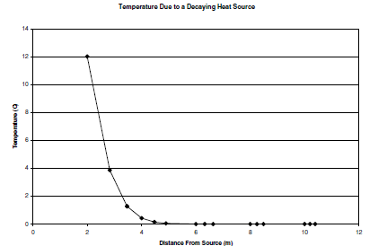
图 3：衰减热源周围的温度分布。
热-力学效应
3DEC 中热学逻辑的主要目的是考察热-力学效应，而不仅仅是热效应。为检验这一能力，确定无限介质对瞬时点源的响应。
Nowacki（1962）给出了无限介质中瞬时点源的解为
其中：
\(\phi(R,t) = {mQ \over {4 \pi R}} \ \hbox{erf} \ \bigl[{K \over {(\beta^{1/2}}} \bigr]\);
\(R\) = 距热源的距离；
\(t\) = 时间；
\(m\) = \({\alpha (1 + \nu)} \over {(1 - \nu)}\) ;
\(\nu\) = 泊松比；
\(G\) = 剪切模量；
\(\beta\) = 4 \(Kt\);
\(K\) = 热扩散率；
\(Q\) = “源强度”；= \(Q_o / \rho\ C_p\)；
\(Qo\) = 释放的热量（\(J\)）；
\(\rho\) = 密度；
\(Cp\) = 比热；以及
\(\alpha\) = 热膨胀系数。
由这些方程可以得到沿 \(z\) 轴（\(x = y\) = 0）的应力和位移：
其中：
\(V_1(z,t) = Q\ \hbox{erf} \ \bigl[{z \over {(\beta)^{1/2}}} \bigr]\);
\(V_2(z,t) = \bigl[{Q \over {(\beta)^{1/2}}} \ \hbox{exp}(-z^2/\beta) \bigr]\)；以及
\(V_3(z,t) = V_2(z,t)/\beta\)
采用以下材料属性和热源参数，用 3DEC 求解该问题：
| 热导率 | 1 W/m/°C |
| density | 2000 kg/m3 |
| 比热容 | 500 J/kg/°C |
| 线性热膨胀系数 | 5 × 10−3 /°C |
| 杨氏模量 | 1.01 GPa |
| 泊松比 | 0.2 |
总热量输入为 108 J，在 3DEC 中由持续 1000 秒的 100 kW 热源表示。用一个边长 5 m 的立方体代表介质的八分之一，如图 4（Figure 4）所示。对于此处获得解的时刻（1 天和 3 天），模型已足够大，可减小边界的影响。
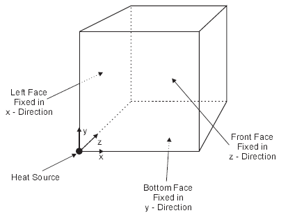
图 4：用于模拟点热源效应的 3DEC 块体概念表示。
该问题的数据文件如下所示：
AnalyticalCoupled/thermomechanical.dat
model new
fish automatic-create off
model large-strain on
;
; 用于 3DEC 热力耦合验证的数据文件
;
model config thermal
block thermal analytical on
;
; 定义 5 m × 5 m × 5 m 区域，表示无限域的一个
; 八分体
block create brick 0 5 0 5 0 5
;
; 定义节理，以便在源附近加密网格
block cut j-set origin .5 .5 .5 dip 0 d-d 0
block cut j-set origin .5 .5 .5 dip 90 d-d 0
block cut j-set origin .5 .5 .5 dip 90 d-d 90
block cut j-set origin 1.5 1.5 1.5 dip 0 d-d 0
block cut j-set origin 1.5 1.5 1.5 dip 90 d-d 0
block cut j-set origin 1.5 1.5 1.5 dip 90 d-d 90
block cut j-set origin 2.5 2.5 2.5 dip 0 d-d 0
block cut j-set origin 2.5 2.5 2.5 dip 90 d-d 0
block cut j-set origin 2.5 2.5 2.5 dip 90 d-d 90
; 连接全部块体以构成连续介质，并生成网格
block join
block zone gen edgelength 0.125 range pos-x 0,0.5 pos-y 0,0.5 pos-z 0,0.5
block zone gen edgelength 0.25 range pos-x 0,1.5 pos-y 0,1.5 pos-z 0,1.5
block zone gen edgelength 0.5 range pos-x 0,2.5 pos-y 0,2.5 pos-z 0,2.5
block zone gen edgelength 1.0 range pos-x 0,5.0 pos-y 0,5.0 pos-z 0,5.0
model save "gen"
model rest "gen"
fish def parameters
global bulk_ = 5.6e8
global shear_ = 4.2e8
global dens_ = 2000.0
global alpha = 5e-3 ; 热膨胀系数
global Cp = 500.0 ; 比热容
global cond_ = 1.0 ; 热导率
global Q0 = 1e8 ; 100 kW * 1000 seconds
global diff_ = cond_ / (dens_*Cp) ; 热扩散率
end
[parameters]
; 定义材料参数
block zone cmodel assign el
block zone prop dens [dens_] bulk=[bulk_] shear=[shear_]
block zone thermal prop exp [alpha]
block contact material-table default prop stiffness-normal 10 ...
stiffness-shear 10
block thermal analytical cond [cond_] diffus [diff_]
; 力学对称条件
block gridpoint apply vel-x 0 range pos-x 0
block gridpoint apply vel-y 0 range pos-y 0
block gridpoint apply vel-z 0 range pos-z 0
; 固定远场边界，仅用于第二种工况
block gridpoint apply vel-x 0 range pos-x 5
block gridpoint apply vel-y 0 range pos-y 5
block gridpoint apply vel-z 0 range pos-z 5
; 在八分体的左下角定义热源
; 100 kW，持续 1000 秒
block thermal source 1 n-comp 1 comp 1 frac 1
block thermal point 0 0 0 source 1 stre 1e5 t-start 0
block thermal point 0 0 0 source 1 stre -1e5 t-start 1000
; 一天后的结果
block thermal analytical solve time=8.64e4
model solve
fish def get_3dec(itab_sxx, itab_syy, itab_szz, itab_dis)
;
; 将应力和位移存入数据表
;
block.field.method.name = 'average'
loop local i (1,20)
local dist = i*0.25
block.field.name = 'stress-xx'
table(itab_sxx,dist) = block.field.get(0.0,0.0,dist)
block.field.name = 'stress-yy'
table(itab_syy,dist) = block.field.get(0.0,0.0,dist)
block.field.name = 'stress-zz'
table(itab_szz,dist) = block.field.get(0.0,0.0,dist)
block.field.name = 'disp-z'
table(itab_dis,dist) = block.field.get(0.0,0.0,dist)
end_loop
end
[get_3dec(1,3,5,7)]
; 将解析解填入偶数编号的数据表
program call "thermomechanical-solution.fis"
[analytical(2,4,6,8,8.64e4)]
table '1' label 'SXX 3DEC'
table '2' label 'SXX Analytical'
table '3' label 'SYY 3DEC'
table '4' label 'SYY Analytical'
table '5' label 'SZZ 3DEC'
table '6' label 'SZZ Analytical'
table '7' label 'Disp 3DEC'
table '8' label 'Disp Analytical'
model save "tmtest-1day"
table '1' clear
table '2' clear
table '3' clear
table '4' clear
table '5' clear
table '6' clear
table '7' clear
table '8' clear
; 三天后的结果
block thermal analytical solve time=2.592e5
model solve
[get_3dec(1,3,5,7)]
[analytical(2,4,6,8,2.592e5)]
model save "tmtest-3days"
3DEC 的块体图如图 5（Figure 5）所示。热源附近应力和位移梯度最大，因此该处离散更细。
图 6（Figure 6） 给出了 3DEC 计算得到的 \(\sigma_{zz}\) 与解析解在 \(z\) 轴附近（\(x = y\) = 0）的对比。图 7（Figure 7） 和 图 8（Figure 8） 给出了 \(\sigma_{xx}\) 和 \(\sigma_{yy}\) 的类似图线，图 9（Figure 9） 则给出位移。这些图中都展示了两种情况：一种是外部边界可自由移动；另一种是外部边界固定、不允许沿边界法向运动。除块体外缘附近的位移外，固定边界与自由边界之间的差异并不特别显著。

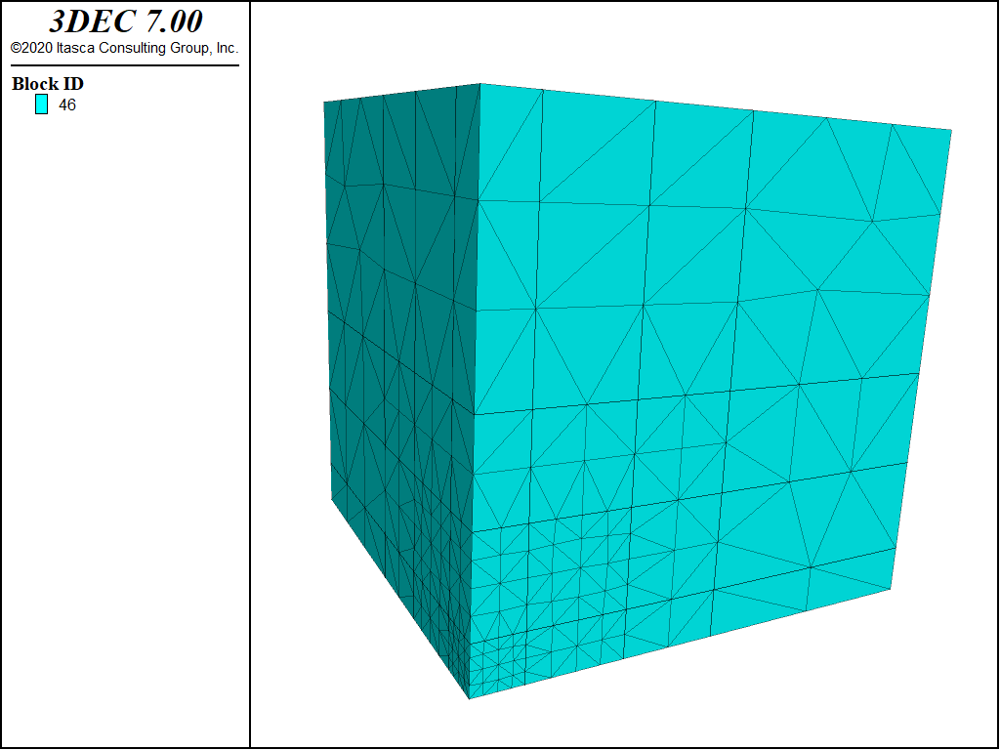
图 5：瞬时点源的 3DEC 模型。


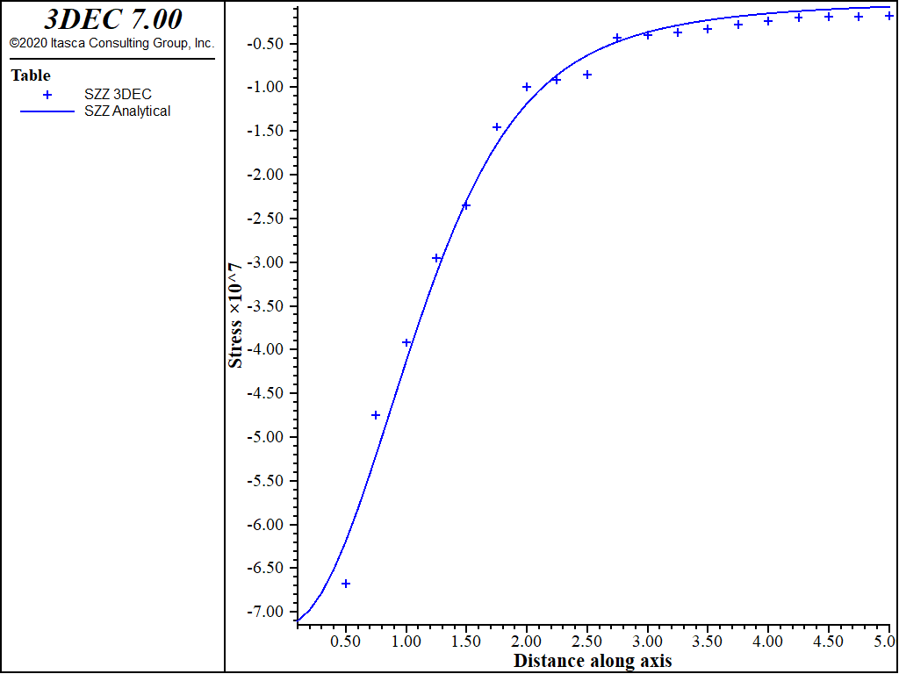
图 6：1 天和 3 天后 \(z\) 轴上（\(x = y\) = 0）的径向应力（\(S_{zz}\)）。
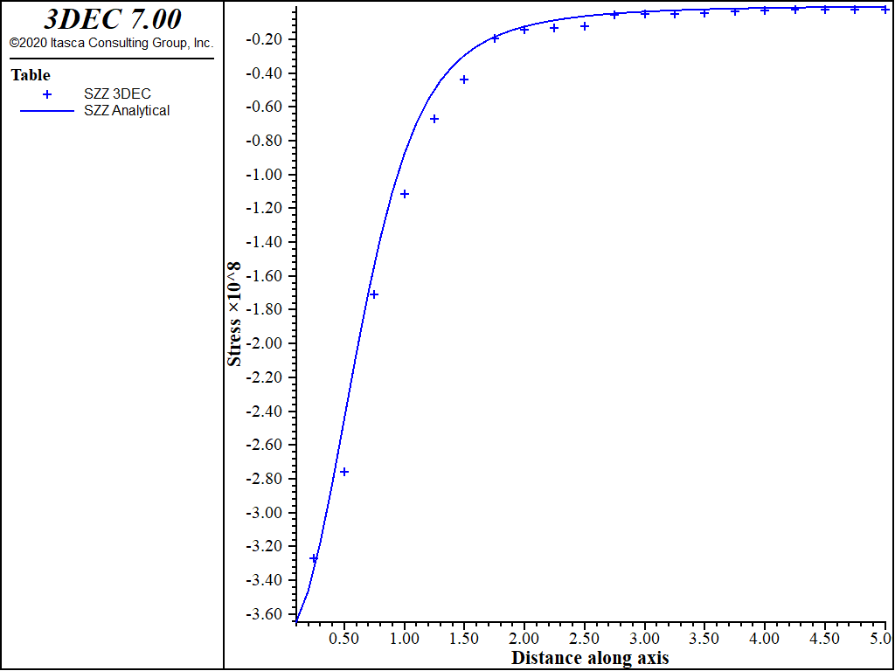

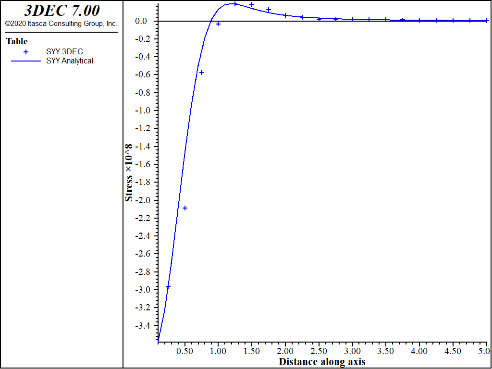
图 7：1 天后沿 \(z\) 轴（\(x = y\) = 0）的切向应力 \(S_{xx}\) 和 \(S_{yy}\)。


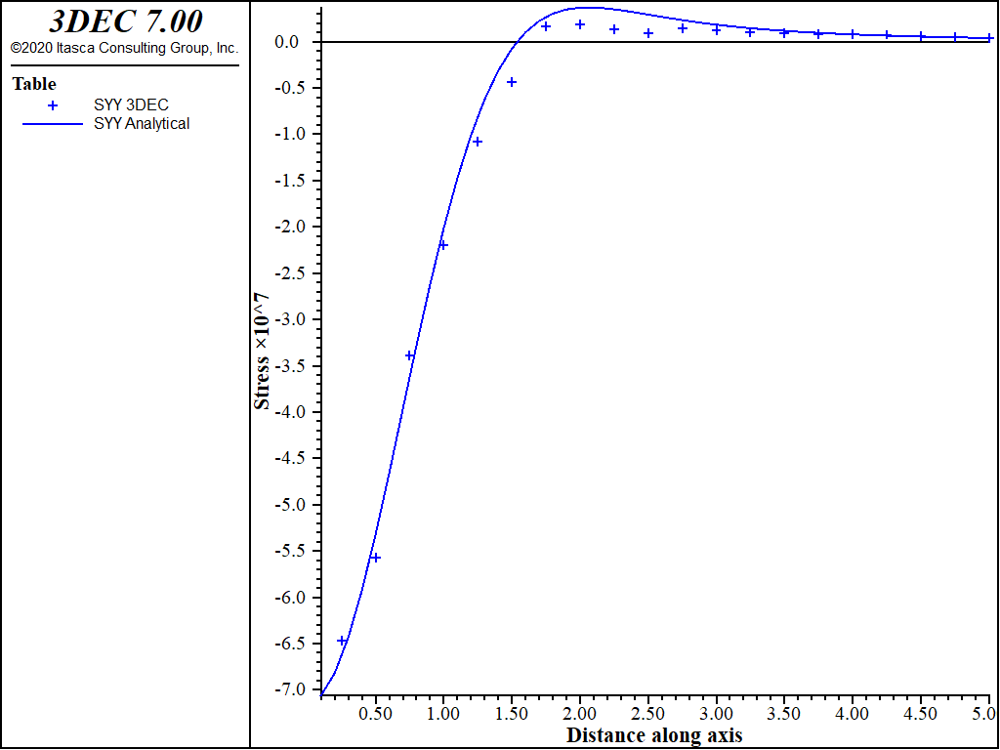
图 8：3 天后沿 \(z\) 轴（\(x = y\) = 0）的切向应力 \(S_{xx}\) 和 \(S_{yy}\)。
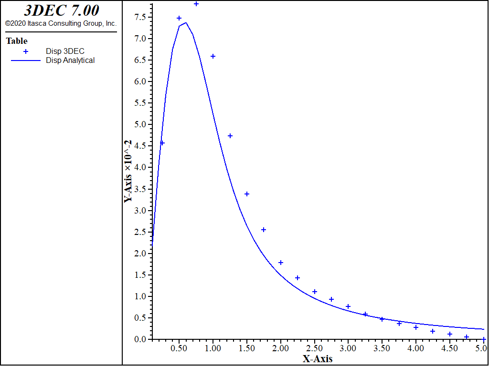

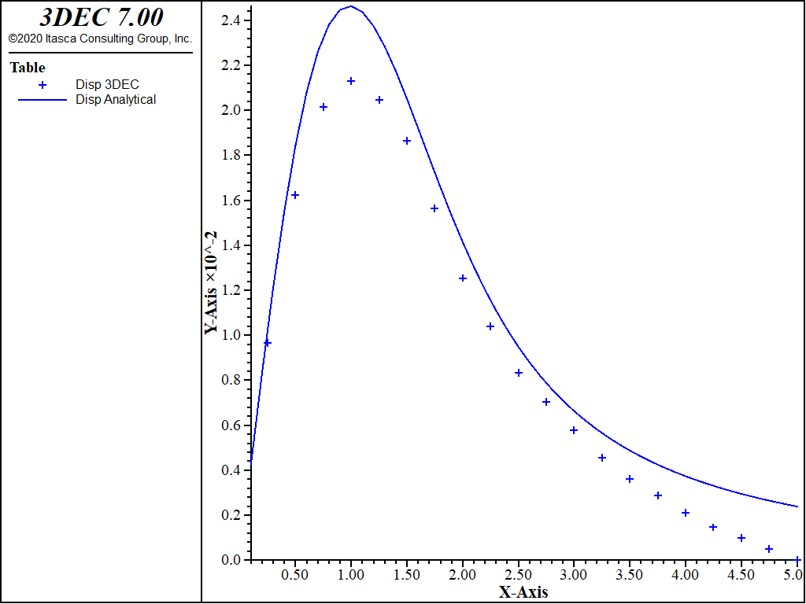
图 9：1 天和 3 天后沿 \(z\) 轴的 \(z\) 位移。
示例问题——废物处置库巷道模型
图 11（Figure 11）显示了假想核废料处置库中一条巷道的横剖面。巷道底板中的热源代表一个废物罐。母岩的属性为：
| 热导率 | 2.2 W/m/°C |
| density | 2300 kg/m3 |
| 比热容 | 900 J/kg/°C |
| 线性热膨胀系数 | 10 × 10−6/°C |
| 体积模量 | 8.3 GPa |
| 剪切模量 | 6.3 GPa |
初始应力为 5 MPa 的静水应力，并假定热源仅有一个组分，衰减常数为 4 × 10−10 s−1，初始强度为 30 kW。
对于该示例，假定还存在其他热源（沿平硐长度方向的间距为 15 m），并且还存在其他平硐（间距 20 m），其底板中也布有热源。力学边界条件已计入这种对称性，而热学对称性则通过规则排列的热源网格来模拟。每个网格中除一个成员外，其余均位于 3DEC 网格之外。
用于求解该问题的数据文件如下所示，图 12（Figure 12）显示了该块体的 3DEC 局部放大图。图 12（Figure 12）显示了模型中的温度和位移。
可通过按下文 FISH 文件所示为每个网格点创建标量来绘制热源网格。图如图 13（Figure 13）所示
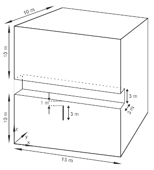
图 10：处置库巷道的概念模型。

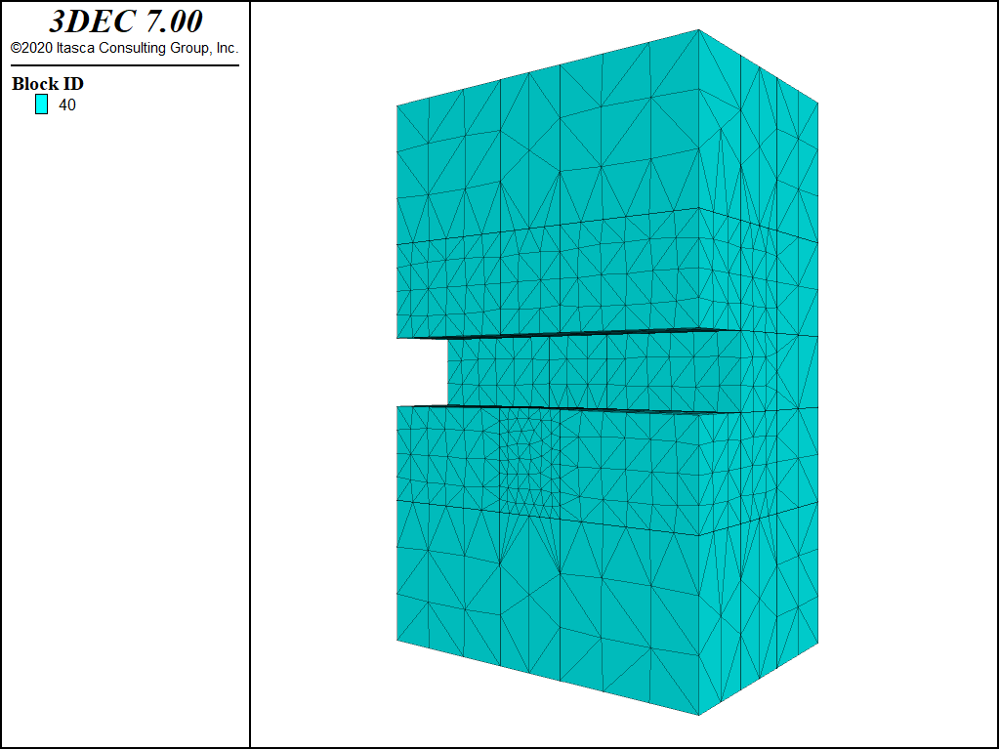
图 11：处置库巷道的 3DEC 模型。

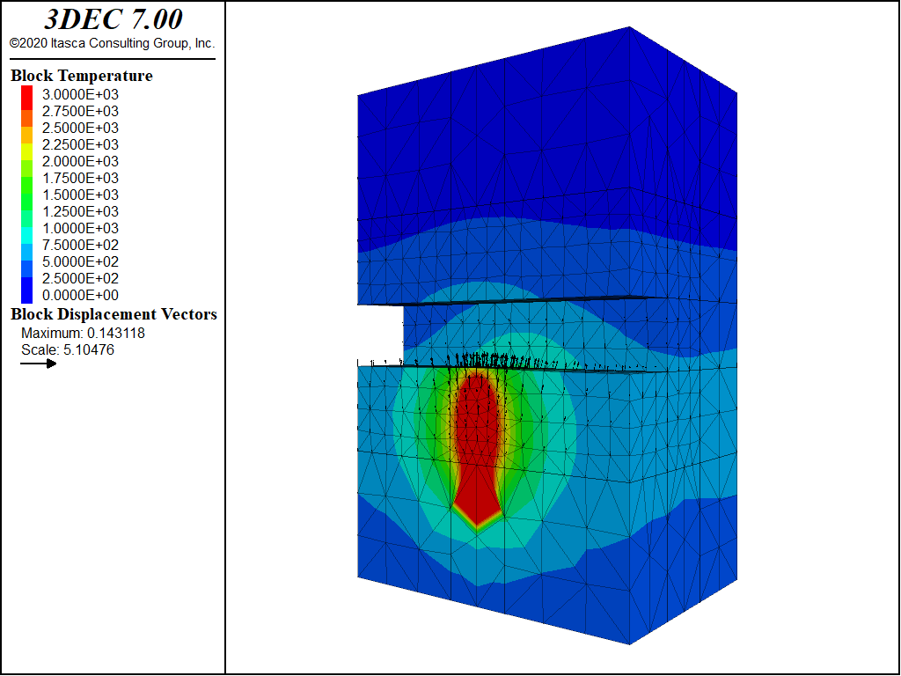
图 12：巷道中心线上的温度和位移。

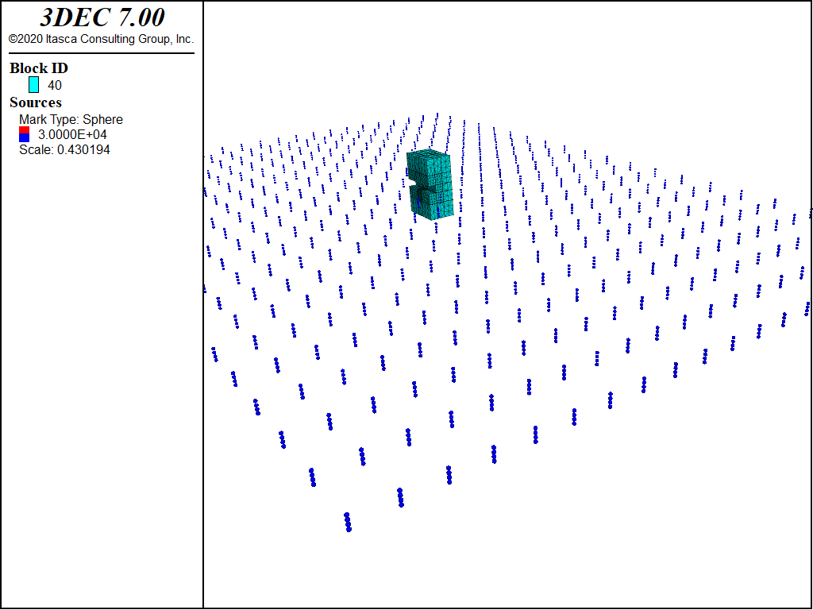
图 13：带热源网格的处置库巷道 3DEC 模型。
数据文件——AnalyticalDriftdrift.dat
model new
;
; 处置库模型
;
model config thermal
model large-strain on
block thermal analytical on
;
; 建立隧道
;
block create brick 0 15 0 10 0 23
block cut joint-set dip-direction 0 dip 90 ori 0,3,0
block cut joint-set dip-direction 0 dip 0 ori 0,0,13
block cut joint-set dip-direction 0 dip 0 ori 0,0,10
block delete range pos-y 0,3 pos-z 10,13
;;
;; 进行细分以加密网格
;
block cut joint-set dip-direction 0 dip 90 ori 0.0,6, 0
block cut joint-set dip-direction 0 dip 0 ori 0.0,0, 6
block cut joint-set dip-direction 0 dip 0 ori 0.0,0,17
block cut joint-set dip-direction 90 dip 90 ori 6.,0, 0
block cut joint-set dip-direction 90 dip 90 ori 9.,0, 0
;
; 将所有块体连接后划分网格
;
block join
;
block zone generate edgelength 0.5 range pos-x 6,9 pos-y 0,3 pos-z 6,10
block zone generate edgelength 1.0 range pos-x 0,15 pos-y 0,6 pos-z 6,17
block zone generate edgelength 2.0 range pos-x 0,15 pos-y 0,10 pos-z 0,23
;
model save "repos"
;
; 约束所有边界以表示对称条件
;
block gridpoint apply vel-x 0 range pos-x 0
block gridpoint apply vel-x 0 range pos-x 15
block gridpoint apply vel-y 0 range pos-y 0
block gridpoint apply vel-y 0 range pos-y 10
block gridpoint apply vel-z 0 range pos-z 0
block gridpoint apply vel-z 0 range pos-z 23
;
block insitu stress -5e6 -5e6 -5e6 0 0 0
;;
block zone cmodel assign el
block zone prop bulk=8.333e9, shear=6.25e9, dens=2300
block zone thermal prop exp=10e-6
block thermal analytical cond=2.2 diffus=1.1e-6
block contact material-table default prop stiffness-normal 1 stiffness-shear 1
;
;
; 历史
;
block his dis-z pos 7.5,0.4,10.1 ;hist1
;
; 初始平衡
;
model solve
model save "repeqm"
;
; 一年后
;
block thermal source 1 n-comp=1, comp=1 frac=1 decay= 4e-10
;
; 定义热源，以表示所建模巷道
; 周围的大范围区域
;
block thermal grid point-1 -142.5,100,9 point-2 157.5,100,9 ...
point-3 157.5,-100,9 source 1 n12=21 n23=21 stre=30e3
block thermal grid point-1 -142.5,100,8 point-2 157.5,100,8 ...
point-3 157.5,-100,8 source 1 n12=21 n23=21 stre=30e3
block thermal grid point-1 -142.5,100,7 point-2 157.5,100,7 ...
point-3 157.5,-100,7 source 1 n12=21 n23=21 stre=30e3
block thermal grid point-1 -142.5,100,6 point-2 157.5,100,6 ...
point-3 157.5,-100,6 source 1 n12=21 n23=21 stre=30e3
block thermal analytical solve time 3.1536e7
model solve
program call 'plotgrid.fis'
model save "repyr1"
数据文件 - AnalyticalDriftplotgrid.fis
fish def plotgrid
; 遍历网格
loop local grid (1,block.thermal.grid.num)
p1 = block.thermal.grid.point(grid,1) ; 左上
p2 = block.thermal.grid.point(grid,2) ; 右上
p3 = block.thermal.grid.point(grid,3) ; 右下
; 为网格中每个点创建一个标量，其值等于强度
; 假定每个网格位于 xy 平面内
numx = block.thermal.grid.n12(grid)
numy = block.thermal.grid.n23(grid)
zpos = p1->z
loop i (1,numx)
xpos = p1->x + (p2->x - p1->x)*i/numx
loop j (1,numy)
ypos = p2->y + (p3->y - p2->y)*j/numy
uds = data.scalar.create(xpos,ypos,zpos)
data.scalar.value(uds) = block.thermal.grid.strength(grid)
end_loop
end_loop
end_loop
end
[plotgrid]
参考文献
Abramowitz, M., and I. A. Stegun. Handbook of Mathematical Functions. New York: Dover Publications Inc. (1972).
Carslaw, H. S., and J. C. Jaeger. Conduction of Heat in Solids, 2nd Ed. Oxford: Clarendon Press (1959).
Crank, J. The Mathematics of Diffusion, 2nd Ed. Oxford: Oxford University Press (1975).
Crouch, S. L., andW. C. McClain. “Interim Report on Development of a Semi-Empirical Numerical Model for Simulating the Deformational Behavior of a High-Level RadioactiveWaste Repository in Bedded Salt,” University of Minnesota Report to Oak Ridge National Laboratory, ORNL/TM-5462 (1978).
Dahlquist, G., and A. Bjorck. Numerical Methods. Englewood Cliffs, New Jersey: Prentice-Hall (1974).
Karlekar, B. V., and R. M. Desmond. Heat Transfer, 2nd Ed. St. Paul: West Publishing Co. (1982).
Nowacki, W. Thermoelasticity. New York: Addison-Wesley (1962).
Perrochet, P., and D. Berod. “Stability of the Standard Crank-Nicolson-Galerkin Scheme Applied to the Diffusion-Convection Equation: Some New Insights,” in Water Resources Research, 29(9), 3291-3297 (September 1993).
| 这些内容对您有帮助吗？… | FLAC3D © 2019, Itasca | 原文更新于 2020 年 10 月 8 日 |
| 版权与免责声明 | ||